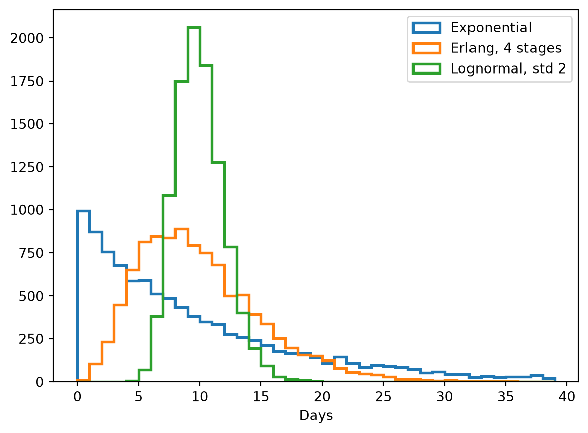
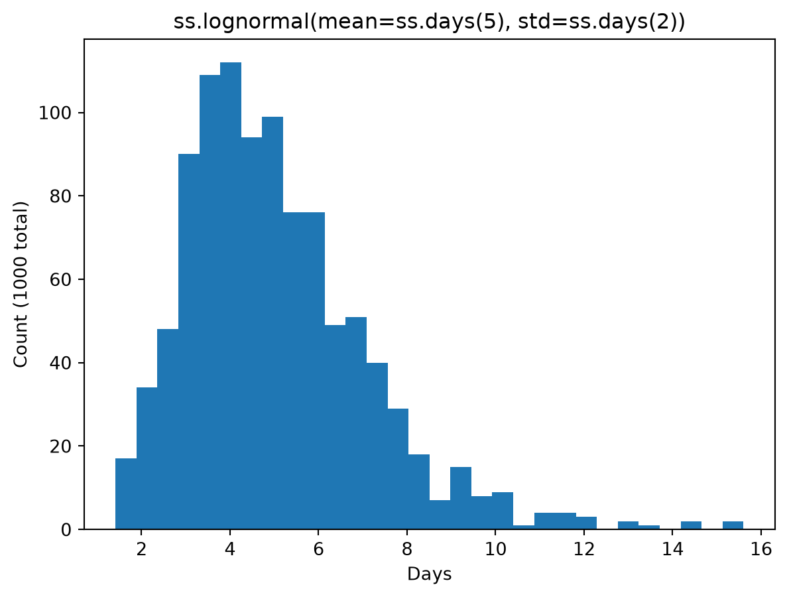
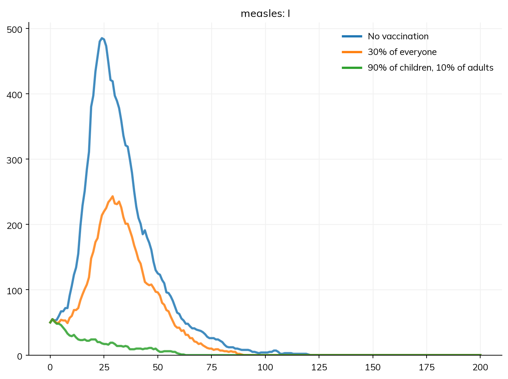

Distributions appear in a model in three ways: as the distribution of a duration (how long people stay in a state, or the delay before an event is reported), as variation between people (each person’s own value of a parameter), and, in modules written as code, as the random draws that decide what happens to each person (who is infected, who tests positive).
Uncertainty about a single value is not variation between people; it is a prior, given with ss.par(..., prior=...) (Parameters). A prior is used in calibration, and to carry the uncertainty into projections, with runs that each draw the value from it (ss.parallel(sim, priors=True, n_runs=...); see Scenarios).
Durations and variation between people
A duration given as a single value, such as I >> R @ ss.days(8), is the mean of an exponential distribution, as in an ODE model. The shape of the distribution matters: with the same mean, it changes when an epidemic peaks and how fast it grows (Durations). These are the distributions most used for durations, each with a mean of 10 days:
import numpy as npimport matplotlib.pyplot as pltimport starsim as ssdurations = {'Exponential': ss.expon(mean=ss.days(10)),'Erlang, 4 stages': ss.erlang(k=4, mean=ss.days(10)),'Lognormal, std 2': ss.lognormal(mean=ss.days(10), std=ss.days(2)),}plt.figure()for label, dist in durations.items(): draws = dist.rvs(10_000) # In days, the unit it was given inprint(label, '- fraction under 4 days:', np.mean(draws <4).round(2)) plt.hist(draws, bins=np.arange(0, 40), histtype='step', lw=2, label=label)plt.xlabel('Days')plt.legend()plt.show()
Exponential - fraction under 4 days: 0.33
Erlang, 4 stages - fraction under 4 days: 0.08
Lognormal, std 2 - fraction under 4 days: 0.0

An Erlang distribution with k stages (a gamma distribution with a whole-number shape) has less spread than an exponential, a standard deviation of the mean divided by √k; a lognormal is given by its mean and standard deviation directly, as a study would report them; and a fixed duration, ss.constant(ss.days(10)), has no spread at all.
In a model, a distribution of durations goes after @, or as dur=:
onset = E >> I @ ss.erlang(k=4, mean=ss.days(10))recovery = I >> R @ ss.lognormal(mean=ss.days(8), std=ss.days(2))recovery = I >> R @ ss.lognormal(mean=8, std=2, unit='days') # The same: the unit given once
A distribution’s unit is given on its parameters, as typed durations, or once with unit=, which applies to every parameter of it that is a time. As agents, each person draws their own duration when they enter the state. As compartments, there are no individuals to draw for, so an Erlang distribution is run exactly as k compartments in a row (stages), a fixed duration or a choice of whole numbers of steps (ss.choice of days, with daily steps) as one compartment for each step people have been in the state, which is exact, and any other distribution as Erlang stages with the same mean and standard deviation, with a note that says how many.
More generally, a distribution given as a parameter’s value gives each person their own value of it: a fraction (p=), or the rate of a transition, can vary between people too. A model whose parameters vary between people, other than durations, needs individuals to hold their values, so it runs as agents. A value that differs by group, rather than at random between people, is better given with ss.by() (Parameters): it is the same for everyone in a group, and runs under every solver.
See the API reference for each, with its parameters and their defaults. The names are also in ss.distributions.dist_list; a parameter can also be given one as a dict with its name as type (dict(type='poisson', mean=5)), for parameters read from a file.
A parameter can also be an array (or a list), for a distribution of each value: ss.normal(mean=[3.5, 4.5], std=[0.9, 0.8]).rvs((1000, 2)) draws 1,000 from each, and ss.poisson([[2.4, 0.9], [0.5, 1.6]]) is a matrix of contacts that differ between people (see Networks). Drawn for agents (rvs(uids)), an array has a value for each agent.
Any SciPy distribution
Any distribution in scipy.stats that is not in the table can be used through ss.Dist, by giving it as dist= with its parameters. It draws from the sim’s random numbers like the others, so it keeps common random numbers (Random numbers). Here a log-logistic distribution (scipy.stats.fisk), sometimes used for incubation periods, whose scale is its median:
import scipy.stats as spsincubation = ss.Dist(dist=sps.fisk, c=4, scale=ss.days(5), name='Log-logistic incubation')draws = incubation.rvs(10_000) # In days, the unit of its scaleprint('Median:', np.median(draws).round(1), 'days')print('95% of draws are between', np.percentile(draws, [2.5, 97.5]).round(1), 'days')
Median: 5.0 days
95% of draws are between [ 2. 12.4] days
Its time unit is given on its parameters, as here; unit= is refused, since Starsim can’t tell how to rescale an arbitrary distribution. It can be the value of a parameter of a module written as code (e.g. ssl.AgentSEIR(dur_exp=incubation)), the duration of a declared transition (ss.Transition(E, I, dur=incubation), which runs as agents, or as matched stages in compartments), and drawn from with rvs() and the rest.
Working with a distribution
A distribution can be made, drawn from, and looked at on its own. Outside a sim, one with a unit draws in that unit, here days, and shows what it was made from:
dist = ss.lognormal(mean=ss.days(5), std=ss.days(2))print(dist)print(dist.rvs(5)) # Five draws, in daysprint('Mean:', dist.dist.mean())print('95% of draws are between', dist.dist.ppf([0.025, 0.975]).round(2))draws = dist.plot_hist(n=1000, bins=30) # Returns the draws
ss.lognormal(mean=ss.days(5), std=ss.days(2))
[2.23074401 4.8888378 7.10934066 4.58126451 5.30768619]
Mean: 5.0
95% of draws are between [2.18 9.88]

In a sim, the same distribution draws in steps of its module instead, and from the sim’s random numbers (Random numbers). One with no unit, such as ss.normal(0, 1), draws outside a sim when made with strict=False, which says it need not use the sim’s random numbers.
dist.dist is the SciPy distribution with its parameters, for its mean, quantiles (ppf), density, and so on.
A distribution can round what it draws, which matters for numbers that must be whole, such as a duration in steps: round=True rounds each value up or down at random in proportion to how close it is (so the mean is kept), and round='nearest' rounds to the nearest whole number. Either can be given when the distribution is made, or when drawing. Here a duration of about 5 days, in a sim with steps of a day, drawn for 10 people three ways (reset=True uses the same random numbers each time):
sim = ss.Sim(n_agents=10, dt=ss.days(1), start='2025-01-01', dur=ss.days(30), verbose=0).init()dur = ss.lognormal(ss.days(5), ss.days(2), round='nearest', name='Rounded duration')dur.init(sim=sim)print('Not rounded:', dur.rvs(sim.people.uid, round=False, reset=True).round(2))print('Nearest: ', dur.rvs(sim.people.uid, reset=True)) # As set when it was madeprint('At random: ', dur.rvs(sim.people.uid, round=True, reset=True))
The parameters of a distribution that is already made, such as the default of a library module, can be changed with set(): ssl.Measles().pars.p_death.set(p=0.05) (see Library: diseases).
A fixed number of people
Some things are a number of people, not a fraction: to start an outbreak with exactly 5 infectious people, give a number (init_n=dict(I=5) for the state, or init_n=5, seeded through the transmission as init_prev= is; init_prev= itself is always a fraction):
S, I, R = ss.states('S I R')infection = S >> I @1.9*Irecovery = I >> R @ ss.days(8)measles = ss.Disease(infection, recovery, init_n=5)sim = ss.Sim(measles, n_agents=10_000, stop=ss.days(50), verbose=0)sim.init()print('Infectious at the start:', sim.diseases.measles.I.sum())
Infectious at the start: 5
ss.choose_n() can be used wherever a Bernoulli distribution can: filter() gives the people chosen, split() both those chosen and the rest, and rvs() a true-or-false value for each person. It can weight people (weights=, a value or a function of the people). Unlike choosing at random from a list, it picks mostly the same people in two sims that differ slightly (Random numbers): here, the same choice made without person 3 replaces only person 3:
sim = ss.Sim(n_agents=20, verbose=0).init()uids = sim.people.auidschoose_a = ss.choose_n(5, name='Choose 5').init(sim=sim) # Two identical distributions, as if in two simschoose_b = ss.choose_n(5, name='Choose 5').init(sim=sim)print('Chosen from everyone:', choose_a.filter(uids))print('Chosen without person 3:', choose_b.filter(uids.remove(3)))by_age = ss.choose_n(5, weights=lambdaself, sim, uids: sim.people.age[uids], name='Choose by age').init(sim=sim)chosen, not_chosen = by_age.split(uids)print('Mean age of those chosen:', sim.people.age[chosen].mean().round(1))print('Mean age of the rest:', sim.people.age[not_chosen].mean().round(1))
Chosen from everyone: [ 3 4 5 12 15]
Chosen without person 3: [ 4 5 11 12 15]
Mean age of those chosen: 57.3
Mean age of the rest: 30.2
Distributions in modules written as code
In a module written as code, a distribution is made once, as a parameter (in define_pars()) or an attribute (in __init__()), and drawn from at each step for the people it is about: dist.rvs(uids) gives one value for each of them, and for a Bernoulli distribution, dist.filter(uids) gives the people for whom it came out true, and dist.split(uids) both those and the rest. A distribution’s parameters can be functions of the module, the sim, and the people (fn(self, sim, uids)), worked out each time it is drawn from and returning one value for each person (or one for all). The rules that keep common random numbers are in Drawing random numbers in a module.
Here an intervention vaccinates susceptible people against measles on one day, each with probability p_vx, a Bernoulli distribution made once, as a parameter, and moves them from S to R (a perfect vaccine). The probability is a single value, or a function of the people: 90% of children under 15 and 10% of adults, against 30% of everyone, which use about the same number of doses:
classCampaign(ss.Intervention):""" Vaccinate susceptible people against measles on one day, each with probability p_vx (a perfect vaccine) """def__init__(self, p_vx=0.3, day=1, **kwargs):super().__init__(**kwargs)self.define_pars(p_vx=ss.bernoulli(p=p_vx), day=day) # The distribution is made once, hereself.update_pars(**kwargs)returndefinit_results(self):super().init_results()self.define_results(ss.Result('n_vaccinated', dtype=int, label='Vaccinated'))returndefstep(self):ifself.ti ==self.pars.day: measles =self.sim.diseases.measles vaccinated =self.pars.p_vx.filter(measles.S.uids) # Draw for the susceptible people only measles.S[vaccinated] =False measles.R[vaccinated] =Trueself.results.n_vaccinated[self.ti] =len(vaccinated)returndefp_by_age(self, sim, uids):""" 90% for children under 15, 10% for everyone else """return np.where(sim.people.age[uids] <15, 0.9, 0.1)defmake_sim(campaign=None): S, I, R = ss.states('S I R') measles = ss.Disease(S >> I @0.04*I, I >> R @ ss.days(8), init_prev=0.01, name='measles') school = ss.RandomNet(name='school', n_contacts=10, who=(ss.person.age >=5) & (ss.person.age <15)) community = ss.RandomNet(name='community', n_contacts=2)return ss.Sim(measles, networks=[school, community], interventions=campaign, n_agents=5000, stop=ss.days(200))scenarios = {'No vaccination': make_sim(),'30% of everyone': make_sim(Campaign(p_vx=0.3)),'90% of children, 10% of adults': make_sim(Campaign(p_vx=p_by_age)),}msim = ss.parallel(scenarios, workers=1)for label, sim inzip(scenarios, msim.sims): doses = sim.results.campaign.n_vaccinated.sum() if'campaign'in sim.results else0print(label, '- doses:', int(doses), '- largest number infectious:', int(sim.results.measles.I.max()))msim.plot('measles.I')
MultiSim: 3 runs of 3 scenarios (No vaccination, 30% of everyone, 90% of children, 10% of adults)
Done in 1.0 s
No vaccination - doses: 0 - largest number infectious: 485
30% of everyone - doses: 1485 - largest number infectious: 243
90% of children, 10% of adults - doses: 1421 - largest number infectious: 55

In a module, init() is done for each of its distributions when the sim is initialized; a distribution used on its own, outside a module, needs dist.init(sim=sim) first, as in the examples above. See Custom modules for whole modules, and Interventions for vaccination as it is usually given, with ss.vaccinate(), which works under every solver.
Pitfalls
A distribution as a value or as a prior. A distribution as a parameter’s value is variation between people; uncertainty about one value is a prior, used in calibration and in runs with priors=True.
The exponential default. A single duration is exponential, with a lot of spread. For a latent or infectious period, an Erlang or lognormal distribution is usually closer to the data.
A unit given twice, or not at all. Give a distribution’s unit on its parameters or with unit=; a bare number takes the model’s unit.
Making distributions at every step in a module written as code. One made in step() is not initialized, so drawing from it raises an error, and initializing it there would break common random numbers. Make them once, in __init__().
A distribution of durations or rates carries a unit of time in one of two ways: with unit= or typed parameters (ss.lognormal(mean=ss.days(8), std=ss.days(2))), if its values can be scaled after the draw, as for a duration; or only through typed parameters, if it must be scaled before the draw, as for a Poisson count given a rate (ss.poisson(ss.perday(2))). Each distribution’s scaling says which; every distribution, with its parameters, is in the API reference, and the names are in ss.distributions.dist_list.